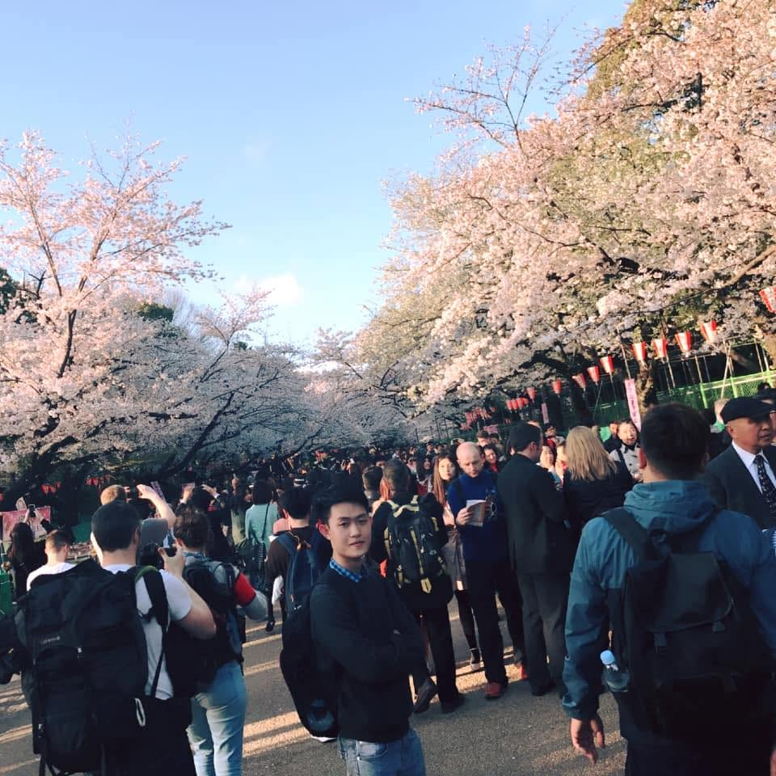

個人開発
ToDo管理システム
React（TypeScript）、Spring Boot、PostgreSQL、Docker Composeを使用して開発。JWT認証機能およびCRUD機能を実装。

私はタムと申します。ベトナムのニントゥアン省出身です。 日本の第一工科大学を卒業し、大学ではプログラミングやデータベースなどのIT技術を学びました。 卒業後はPLC制御設計業務とWebアプリケーション開発を経験しました。私の強みは論理的思考力と学習意欲です。新しい技術を積極的に学びながら、より良いシステムやサービスを開発できるエンジニアを目指しています。
履歴書のダウンロードJava、PHP、JavaScript、HTML、CSS
Spring Boot、Spring Data JPA、React（TypeScript）、jQuery、Bootstrap
MySQL、PostgreSQL
Git、GitHub、Docker Compose、Postman、Linux、Maven、VS Code、Eclipse
REST API、CRUD処理、JWT認証、トランザクション管理、MVCアーキテクチャ
個人開発
React（TypeScript）、Spring Boot、PostgreSQL、Docker Composeを使用して開発。JWT認証機能およびCRUD機能を実装。
個人開発
Spring Boot、Spring Data JPA、MySQLを使用して開発。注文機能や注文履歴管理機能を実装。
チーム開発
Java、JSP、Servlet、PostgreSQLを使用。カレンダー機能のCRUD、都道府県絞り込み機能、価格並び替え機能などを担当。
卒業研究・チーム開発
PHP、MySQLを使用。ログイン機能、検索機能、CRUD機能を担当。
個人開発
HTML、CSS、JavaScriptを使用して開発。自己紹介や開発実績を掲載。
私の特技はチェスです。チェスに情熱を注いでおり、ニントゥアン省チェス大会で小学校時代に銅メダル3個と 中学校では銀メダル3個と高校時代には金メダル2個を獲得しました。これらのメダルは私の努力と献身の証で ある。チェスは私にとって戦略的思考と集中力を養う重要な活動である。
音楽は歌詞やメロディーを通して私にとってインスピレーションと強い感情の源です。音楽を聴くたびに安らぎ を感じ、日々のプレッシャーから解放され、K-POP、ロック、EDM など、さまざまなジャンルの音楽を聴くの が大好きです。音楽を聴くという趣味は、私の人生において切り離せない喜びです。
それは私の健康を改善する活動です。走るたびに自由を感じ、自分自身に集中できます。ジョギングは体を強 化し、ストレスを軽減し、心をリラックスさせるのにも役立ちます。この趣味は私の日常生活の不可欠な部分 となっており、私の健康と精神状態に多くの重要な恩恵をもたらしています。
読書は視野を広げ、知識を増やし、思考の創造性を刺激します。私は科学技術に関する本を読んだり、考えたり、 投資したりするのが大好きです。読書は個人的な趣味であるだけでなく、私がより自信を持ち、批判的に考え ることができ、人生や周囲の世界についてより深い洞察力を持つことができるようにするのにも役立ちました。
ニントゥアン省はベトナム中部の省で、山と海の間にあり、多くの美しいビーチがあります。 ニントゥアン省は、チャム族やキン族などの民族の影響を受け、多様な文化が共存する地域です。さらに、 ニン トゥアンには、ライ洞窟、ニンチュービーチ、、ニントゥアンブドウ園など、観光客を惹きつける 多くの観光名所があります。
そのために、日本でシステム開発に関する幅広い経験を積み、技術力と実務能力を高めていきたいと考えています。 また、新しい技術を積極的に学び続け、将来的にはプロジェクトに貢献できるエンジニアとして成
もっと読む以下は、私に連絡するための情報である